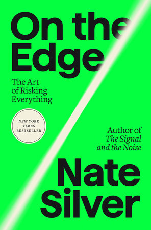

(Audio) On the Edge, by Nate Silver
Sunday September 15, 2024
When Trump won the 2016 election despite 538's needle showing less than 50% for him, it split the world. There were people who gave Nate Silver a hard time about it ("the village") and people who still thought he was cool ("the river"). Since then, Silver has been hanging out with his buddies, having a good time playing poker, and he can write a book about whatever he wants, so here it is. It reads, unintentionally, as a warning about the risks of seeing the world only in calculating, risk-taking terms.
Silver tries to explain why there are more men than women playing poker. He suggests that men are more aggressive, and aggression makes you better at poker. I think Silver misses the big picture: It isn't really a good idea to play poker in the first place. It's anti-social. Elsewhere, Silver does explain that the poker ecosystem requires "fish" for people to take money from. Why are there more men playing poker? Because they're dumb!
(There is an apparent contradiction here, in that I myself enjoy the occasional social poker game, and have even played to make money at casinos a couple times. But I still believe that if you're consistently playing to make money, it is a kind of legal theft, a kind of con, as bad as the casino itself. The divide between a friendly game and stealing wallets from drunk strangers is not always perfectly clear, but I think it exists.)
Silver comes closest to explicitly warning against "the river" way of thinking in his extended coverage of Sam Bankman-Fried (SBF) and FTX. He thinks SBF's problem (one of them) was that he bet too big. Silver references the Kelly criterion for bet-sizing and suggests that SBF was willing to make bets that were too large.
I think Silver missed another aspect, which is that even very small bets can be bad bets to make - even when they're positive EV. The thing to consider is the probability of ending up better off or worse off then currently. Even if the EV is very positive, if the chance of "hitting it" is low and the chance of getting worse off is high, it's very sensible to not make that bet.
I wrote up my way of thinking about this a while ago as Expected value is not useful for making decisions about lottery tickets. See also notes on expected value in connection with How Not to Be Wrong, by Ellenberg and The Scout Mindset, by Galef. A related question to ask is: Is it worth doing even if it fails?
At one point Silver quotes Oppenheimer:
“It is a profound and necessary truth that the deep things in science are not found because they are useful; they are found because it was possible to find them.”
I like this quote. It reminds me of Why greatness cannot be planned (Stanley and Lehman). We often expand our knowledge along the current frontiers and only later identify the applications. See also The Unreasonable Effectiveness of Mathematics in the Natural Sciences.
Silver talks some about secular stagnation, which reminded me of The Rise and Fall of American Growth and that despite claims of stagnation Mortality rates have improved without pause until the present (apart from the recent impact of Covid). Of course Silver is really just trying to talk about AI and whether it will kill us all. (He thinks it might.)
Silver tries to conclude with some sort of morality or politics, but it feels bolted on. When he was talking about SBF and being critical of Effective Altruism and Rationalism, I had some thought that perhaps Silver was self-aware and the conclusion of the book was going to be a big reveal that he had realized that "the river" was itself a risk to humanity. But I don't think he got there. So while he does say some things about the risks of quantification (shades of The Tyranny of Metrics) Silver is still mostly just hanging out with his friends and following his interests. Good for him?
